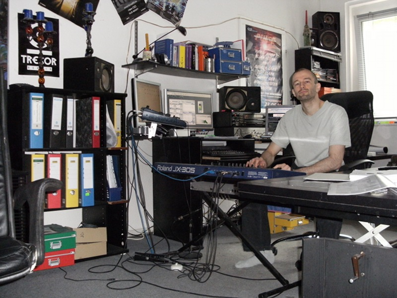

Contact
Postal Address:
Robin Schmidt
Ahrenshooper Str. 80
13051 Berlin
Germany
E-Mail:
robin at rs-met dot com
Note: email should be reserved mainly for business communication. For product support, please use
the forum (see Support page).
Phone:
+49 030 96208312
Tax Numbers:
Tax Number: 32 513 61025
Taxpayer Identification Number: 57 443 029 163
Privacy Policy
If you purchase a commercial RS-MET product, you will get a personalized keyfile which contains your name, physical address and email address (which I obtain from the PayPal purchase notification). I keep a copy of this keyfile on my local computer in order to later verify a purchase, if you should loose you keyfile and need a new one. I also archive the PayPal purchase notifications for accounting purposes (in accordance with german tax laws).
If you subscribe to the email newsletter, your email address will be stored in a mailing list and deleted from the list when you unsubscribe.
If you contact me via email, I sometimes archive the conversation for later reference.
When you visit the RS-MET website, my webhosting provider (strato.de) keeps the usual server logfiles containing your IP address, browser, operating system, location, date and time of server request.
The only person who has access to the data is me (Robin) and my webhosting provider. I don't share any of that data with anyone. The website doesn't use cookies or google analytics or any other analysis tool.
The company and the person behind
|

The robin in its natural habitat |
The company was founded in August 2008 by Robin Schmidt (that's me) and started sales of its first commercial product - the subtractive synthesizer 'Straightliner' - at this point. My educational background is a master degree in communication science (with focus on audio signal processing), computer science (with focus on artificial intelligence / neural networks) and acoustics. The certificate and thesis can be seen here (in german). My personal background is being a passionate music- and sound-design freak with several years of VST-development in the freeware department. This old stuff is still available on my private website www.braindoc.de but is discontinued in this form. However, certain things will be continued in the context of this company. |
{kind=link}
The company policy
Target Group
RS-MET is targeting mainly at those musicians and audio engineers who really want to know, what they are doing when tweaking some parameter - thus, the more technically inclined. That's why parameters are always shown in meaningful physical units (for example in Hz for frequencies, dB for levels, etc.) rather than as arbitrary number between 0 and 10 or 0 and 127 or without any numerical display at all. The overall look and feel of the plugins may come across rather clean and technical. But that should not in any way sacrifice the fun-factor. Signal-processing wise, there's more rock'n'roll in the plugIns than the somewhat clean interfaces may suggest. A bit like throwing an electric guitar into a drumset but calculating its parabolic trajectory before.
User Interfaces
On the one hand, I try to make them as simple as possible (but no simpler ;-) ), but on the other hand, I want to give the user deep editing capabilities. These are actually two conflicting requirements. That's why I always try to focus on the clarity, leaving out all the fancy bells and whistles commonly seen on artwork-ish designed user interfaces. Also, I do believe that software user-interfaces can have an inherent advantage over hardware interfaces because they can easily visualize what's going on. So I try to exploit this (potential) advantage as much as possible by incorporating visual editors wherever this is possible and meaningful. I think that this advantage can often outweigh the inherent disadvantage of software compared to hardware of having no physical presence. I don't see any point in mimicking the look-and-feel of hardware on the screen (with all those virtual knobs, virtual wood panels, rack mounts, etc.) because that would often mean to relinquish the potential advantage (without getting back the physical presence of hardware, of course) - screen estate can be used more meaningfully than for virtual rack mounts.
Licensing and Copy-Protection
For the commercial products, I can't get around the necessary evil to implement some licensing mechanism (although I find that boring and distracting). Because I'm much more interested in audio signal processing than in copy protection mechanisms, I want to keep that as simple as possible. rs-met uses a simple keyfile mechanism - that is: you can download all products here from this website, but the commercial ones will run in demo mode unless you have a keyfile in the same folder as the plugIn. Each such keyfile is unique and it is probably needless to say that it is a violation of the licensing agreement to share such keyfiles. You can obtain (buy, that is) such keyfiles through the online payment service PayPal on the Products page. Once you have it, simply put it side by side into the same directory in which the actual program/plugIn resides and from now on you will not be nagged by the demo restrictions anymore.
Marketing
Factual person that I am, it sometimes annoys me a bit when audio software companies are boasting marketing phrases like '...our innovative groundbreaking next generation super high quality audio engine will give you the most pristine sound quality ever in the universe...' (a bit exaggerated, admittedly). Instead of throwing around such phrases, I try to give well founded technical information and facts about the underlying signal processing algorithms. That reflects the aim to target the more technically inclined musicians, producers and audio engineers who are not so easily glared. I believe that this type of user is better attracted by true information - that's a reason why I provide tutorials which explain what certain effect- and synthesis-algorithms do, why they do it, and - to some extent - how they do it.